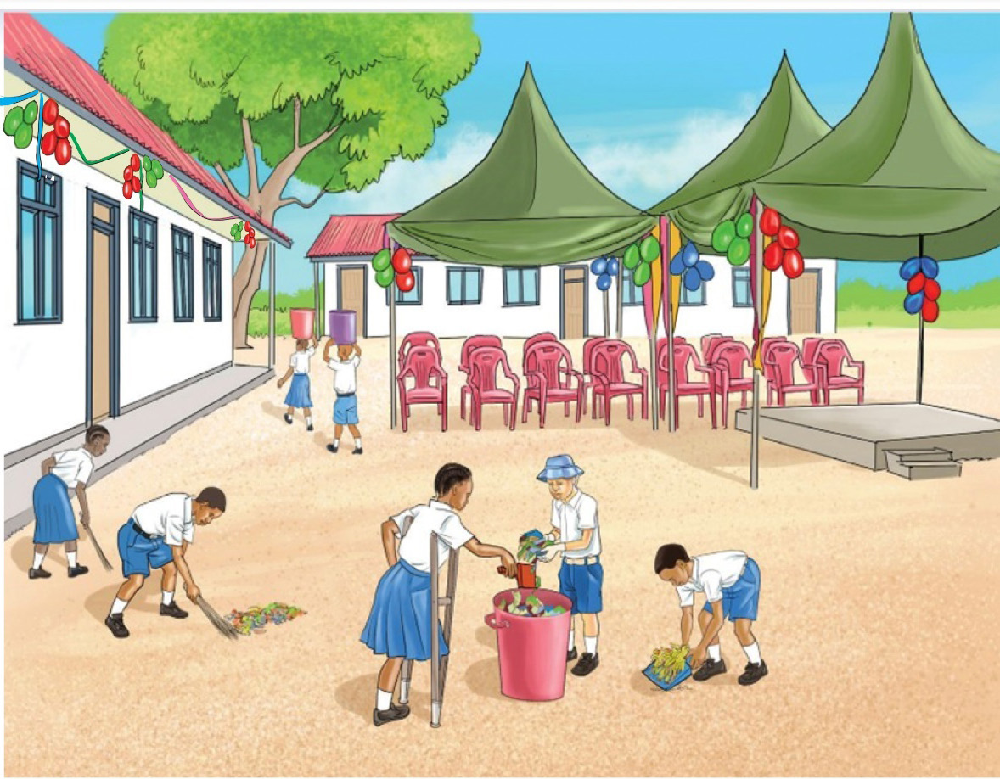

kwa juhudi na umoja kama mchwa au siafu. Wanafunzi wa Darasa la Sita hawakupangiwa kazi yoyote.

Wapishi wameandaa vyakula mbalimbali kwa ajili ya mahafali. Wamepika pilau, wali, ndizi, nyama, njegere na maharage. Kadhalika, wamechoma mbuzi wengi, wamepika mboga za majani, yaani mchicha, kisamvu na majani ya kunde. Pia, wameandaa matunda kama mananasi, maembe na machungwa. Vyakula vyote vimeivishwa kwa wakati na kupangwa kwenye meza upande wa kushoto wa uwanja.
Jukwaa kubwa limeandaliwa kwa ajili ya wageni. Hapo, pamewekwa meza kubwa iliyotandwa kwa kitambaa cheupe. Pembeni mwa jukwaa hilo, kuna maturubai yaliyofungwa kwa ajili ya kivuli. Sehemu hiyo ni maalumu kwa wazazi na wageni waalikwa. Maeneo yote ya shule yamepambwa kwa maputo ya rangi ya bluu, kijani na nyekundu. Rangi hizi zililifanya eneo hili kuwa na mvuto kwa watu wote.